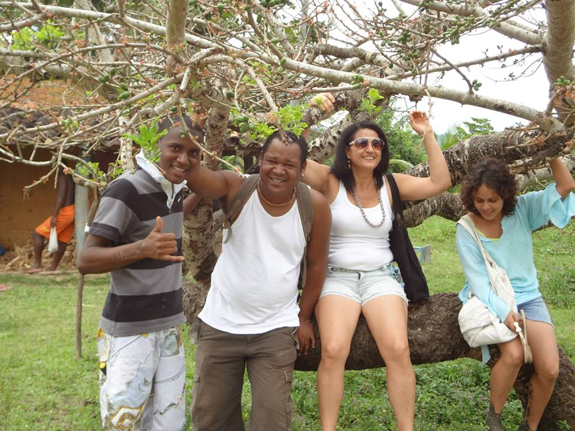
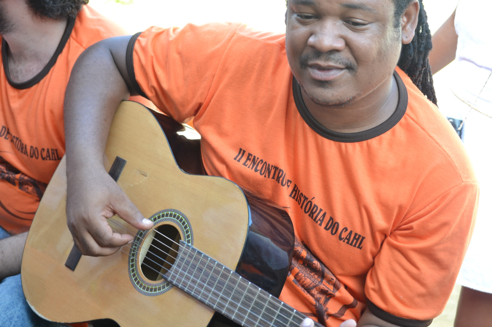
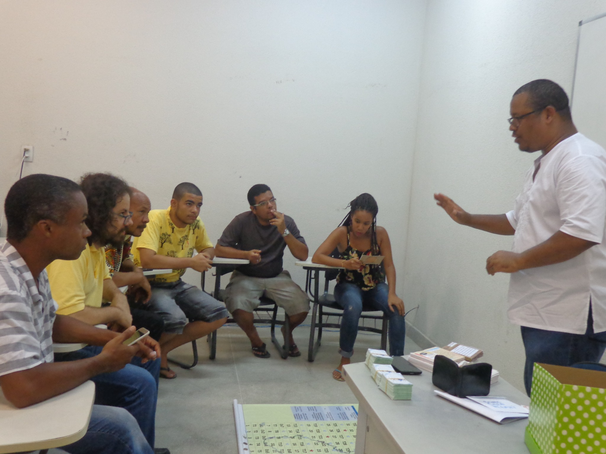
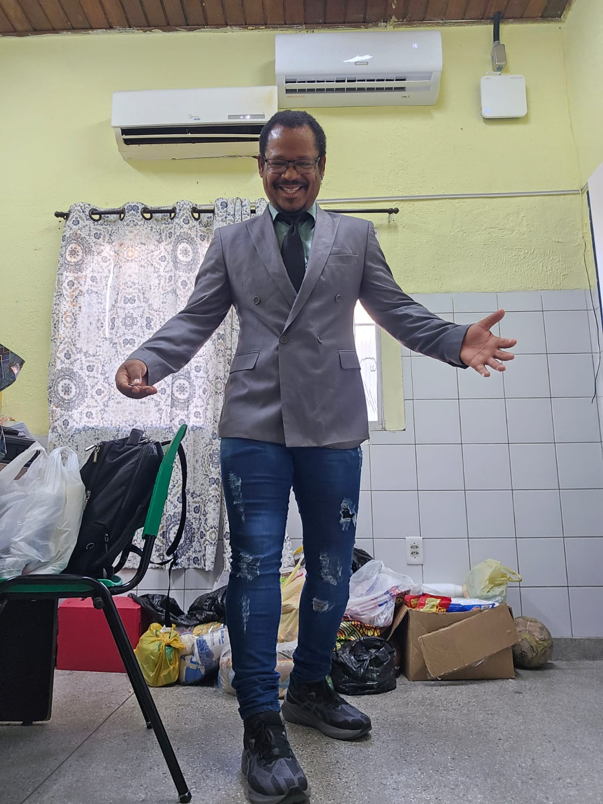

2013 · Kaonge
Festival das Ostras
Momento de descontração entre amigos da graduação durante atividade cultural vivida pela primeira vez em um espaço quilombola no Kaonge.
Trajetória de egresso
Da formação em História à docência, à pesquisa e ao doutorado.
2010.1–2015.1
Wilson Oliveira Badaró ingressou no Curso de História da UFRB em 2010.1 e concluiu a graduação em 2015.1. As memórias compartilhadas no formulário registram experiências acadêmicas e culturais vividas no CAHL e em comunidades do Recôncavo.
Em 2026, concluiu o doutorado e informa atuar como professor concursado do município de Lauro de Freitas, na disciplina de Cultura e História Afro-brasileira e Indígena, além de desenvolver atividades de pesquisa.
Memórias do curso

Momento de descontração entre amigos da graduação durante atividade cultural vivida pela primeira vez em um espaço quilombola no Kaonge.

Registro da preparação dos detalhes para o II Encontro de História no Centro de Artes, Humanidades e Letras.

Defesa de mestrado no Centro de Artes, Humanidades e Letras, com apresentação do produto Como Cura Kemet.
Você hoje

Badaró informa que concluiu o doutorado em 30 de julho de 2026 e atualmente é professor concursado do município de Lauro de Freitas, atuando na disciplina de Cultura e História Afro-brasileira e Indígena, na Escola Municipal Dinorah Pessoa.
Vozes do curso
Neste depoimento, Wilson Oliveira Badaró compartilha suas memórias e sua experiência de formação no Curso de História da UFRB.